Panorama du traitement des boues urbaines
La boue est le principal déchet issu du traitement des eaux usées. Aborder une problématique liée aux boues implique de se confronter à une matière complexe dont l'élimination est réglementée et normée.
La boue présente des caractéristiques qui nécessitent qu'elle soit traitée à bon escient et que les voies de valorisation envisageables soient étudiées avec minutie. En fonction de leurs compositions, leurs exutoires seront adaptés car bien que représentant un intérêt quant aux nutriments qu'elles apportent aux niveaux des surfaces agricoles, elles sont aussi une source de pollution des sols.
Les boues sont aussi une matière fermentescible source d'énergie valorisable. Dans tous les cas la réduction des volumes de boue et les coûts associés sont un enjeu majeur qui implique de considérer de nombreuses technologies dont des technologies thermiques fonctionnant à haute pression et à haute température.
1.1 Qu'est-ce que la matrice boue ?
La boue est un ensemble de particules en suspension dans une matrice liquide. Le terme de boue désigne à la fois la matière particulaire contenue dans l'eau ainsi que la matière particulaire générée par la croissance bactérienne issue des procédés de traitement des eaux usées.
La matrice d'une boue est complexe à décrire. La meilleure illustration d'un floc de boue est celle proposée à la figure 1.1 par Nielsen [Nielsen, 2012].
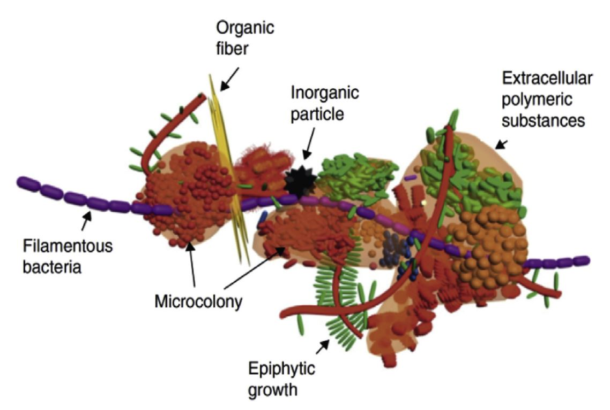
Ce floc de boue est composé :
- De matière organique inerte telle que des substances polymériques extracellulaires (EPS) ou bien des fibres,
- D'un agent pathogène, ici une bactérie filamenteuse,
- De microcolonies,
- De particules inorganiques, telles que des cristaux, du microsable ou bien dans notre exemple une particule métallique.
L'origine de ces éléments est connue. Ainsi :
La matière organique correspond à la matière produite par des êtres vivants tels que des humains, des animaux, des microorganismes et aussi des végétaux.
Les substances polymériques extracellulaires [EPS] sont des biopolymères naturellement produits par des microorganismes et nécessaires à leur survie. Ces EPS assurent la formation et la cohésion des flocs de boue.
Les agents pathogènes sont des micro-organismes qui sont soit issus d'organismes vivants, soit ceux naturellement présents dans l'environnement. Ils sont classés par la norme NFU en trois catégories, à savoir :
- Des virus. Les populations contrôlées sont les enterovirus, les hepatovirus, les rotavirus, les reovirus, les astrovirus, les Sapporo-like virus et Norwalk-like virus, les mastadenovirus et les coronavirus.
- Des parasites, tels que des protozoaires ou des métazoaires (œufs d'helminthe, œufs de ténia, des vers).
- Des bactéries, telles que des filamenteuses, les pseudomonas, l'arthrobacter, le flavobacterium, les Escherichia coli, la listeria, la salmonelle, le clostridium perfringens, les staphylocoques, les entérocoques, etc.
Les fibres sont issues de la dégradation de végétaux, de résidus de papier mais aussi des cheveux ou assimilés.
Sont aussi présents des contaminants chimiques de deux catégories [NFX, hydrocarbures] :
- Les métaux lourds ou éléments traces métalliques (ETM), à savoir le cuivre, le zinc, le plomb, le cadmium, le chrome, le nickel, le mercure, auxquels il faut adjoindre un métalloïde, le sélénium. Ces métaux lourds issus principalement de l'industrie se retrouvent dans les réseaux de collecte. Cette liste non exhaustive d'éléments métalliques se retrouve dans la norme compost [NFU compost].
- Des composés traces organiques, tels que par exemple des solvants ou du détergent, dont deux familles sont principalement suivies [NFUspec] :
- les hydrocarbures polycycliques aromatiques (HPA),
- les polychlorobiphényls (PCB) et dioxines.
1.2 D'où proviennent les boues ?
Qu'elles soient d'origine urbaine, agricole ou industrielle, les eaux usées doivent être traitées afin de réduire leur niveau de pollution et limiter leur impact sur l'environnement. Ces eaux sont collectées et envoyées vers des stations d'épuration où des procédés biologiques vont abattre la pollution. Les éléments à traiter ainsi que leurs limites sont imposés par la directive 91/271/EEC.
Cette directive européenne définit la matrice de la pollution à traiter suivant les 5 indicateurs que sont :
- La demande chimique en oxygène [DCO],
- La demande biochimique en oxygène [DBO],
- Le total des matières solides en suspension,
- La concentration en phosphore total,
- La concentration en azote total.
Lors du traitement de l'eau résiduaire, on va transférer une pollution en phase liquide en une phase gazeuse (CO₂, N₂, H₂S, tous les composés odorants) et générer une phase concentrée à savoir les boues. La nature des boues est totalement dépendante de la file de traitement d'eau retenue. De nombreux ouvrages présentent les différentes filières et alternatives sur la manière de traiter cette pollution.
Le tableau 1.1 récapitule l'ensemble des technologies permettant un traitement biologique des eaux usées. Ces procédés sont :
- Des boues activées dont les cultures bactériennes traitant la pollution sont libres.
- Des MBBR (pour Moving Biofilm Bed Reactor) dont les cultures bactériennes sont fixées sur des médias permettant de conserver et contrôler davantage ces bactéries au travers d'une série de réacteurs ayant chacun sa flore bactérienne. Comparée à une boue activée, la taille de l'ouvrage est plus compacte.
- Des SBR (pour Sequencing Batch Reactor) qui, tout comme les MBBR, peuvent fixer les bactéries sur un média mais utilisent des séquences pour le traitement des différentes charges polluantes au sein d'un même réacteur.
- Des biofiltres.
- Des MBR (pour Membrane Bio Reactors) qui utilisent des membranes directement submergées dans la biomasse en suspension. La compacité des stations s'en trouve réduite.
| Pollution traitée | |||
|---|---|---|---|
| Carbone | Azote | Phosphore | |
| Boue activée avec ou sans décanteur primaire | x | ||
| x | x | ||
| MBBR boue activée hybride | x | ||
| x | x | ||
| x | x | x | |
| (M)SBR | x | x | |
| x | x | x | |
| Biofiltre avec décanteur primaire | x | ||
| x | x | ||
| x | x | x | |
| MBR | x | x | |
| x | x | x | |
En fonction de la charge en matière en suspension présente dans l'effluent à traiter, un décanteur dit primaire peut être installé en amont de ces traitements biologiques. Ce décanteur primaire produit de la boue dite primaire. Dans les pays en voie de développement, il arrive que seul un décanteur primaire soit installé ne produisant que de la boue primaire.
En fonction de la charge massique arrivant sur l'usine, et selon la pollution à traiter, différents traitements biologiques peuvent être employés. La nature de ces installations a un impact sur la nature des boues et sur les voies de valorisation envisageables. En général, plus la charge de la boue sera importante, mieux elle se digérera et moins il sera opportun de la lyser.
Le tableau 1.2 recense les technologies utilisées sur les 140 plus grosses usines opérées par VEOLIA à travers le monde en 2014. Il apparaît que 83 % de ces stations utilisent un procédé dit de boue activée, avec ou sans décantation primaire, ce qui représente 47,63 million d'équivalent habitant traités (Million d'EH traités).
| Nombre de sites | Million d'EH traités | |
|---|---|---|
| Boue Activée faible charge sans primaire | 36 | 7,43 |
| Boue Activée faible charge avec primaire | 54 | 28,41 |
| Boue Activée forte charge sans primaire | 9 | 4,27 |
| Boue Activée forte charge avec primaire | 17 | 7,52 |
| Biofiltres | 24 | 6,34 |
| Total de sites | 140 | 53,97 |
| Sites ayant une boue activée | 116 | 47,63 |
| Part des boues activées | 83 % | 88 % |
Le but de cette partie n'est pas de redéfinir les spécificités de chacun des traitements biologiques mais d'exposer le principe le plus répandu à savoir celui de la boue activée.
La figure 1.2 reprend le principe de la boue activée tel qu'il fut développé dès 1914 par Arden et son équipe [Ardern, 1914]. La description détaillée de ce procédé de traitement se trouve dans de nombreux ouvrages dont le « Metcalf et Eddy » [Metcalf, 2003].
Le principe d'une installation de traitement des eaux usées via une boue activée telle que présentée à la figure 1.2 est le suivant. L'eau brute à traiter arrive à l'entrée de la station (point 1). Après avoir reçu un prétraitement (point 2) consistant en un dégrillage grossier avec une maille d'au moins 10 cm puis un dégrillage fin avec une maille de 3 cm permettant de filtrer des éléments solides de plus petite taille, l'eau usée va être désablée puis déshuilée.
L'eau prétraitée arrive ensuite au niveau d'un bassin biologique (point 3) qui permet d'abattre la pollution carbonée et azotée grâce à la présence de micro-organismes appelés boue activée ou biomasse. Ce bassin comprend :
- Trois compartiments communiquant : une zone anoxie, une zone aérobie et un bassin d'aération séparé en deux zones
- Un dispositif d'aération constitué de turbines de surface et d'aérateurs de fond pour fournir de l'oxygène à la masse bactérienne présente dans le bassin d'aération. Ce dispositif joue également le rôle de brassage pour assurer le contact entre la biomasse et la matière organique à dégrader, éviter les dépôts et favoriser la diffusion de l'oxygène.
L'élimination de la pollution carbonée est réalisée par des bactéries hétérotrophes en présence d'oxygène. L'élimination de la pollution azotée s'effectue par des cycles de nitrification-dénitrification.
L'élimination de la pollution azotée se déroule en deux étapes dites nitrification dénitrification. La nitrification nécessite la présence de bactéries autotrophes nitrifiantes qui, en présence d'oxygène, transforme l'ammoniaque en nitrates (zone aérobie + zone d'aération en phase de marche des turbines). La dénitrification s'effectue en l'absence d'oxygène dissous (zone anoxie + zone aérobie et zone d'aération en phase d'arrêt des turbines) sous l'action de bactéries hétérotrophes dénitrifiantes. Celles-ci utilisent l'oxygène des nitrates formés en nitrification pour se développer. Il y a alors réduction des nitrates en azote gazeux. En sortie du bassin biologique, la boue formée va être séparée de l'eau traitée par décantation au travers d'un décanteur (point 4).
Comme mentionné précédemment, les boues activées utilisent une flore bactérienne en culture libre. Il est donc nécessaire de recirculer une partie des boues extraites en sortie du clarificateur (point 6) afin de maintenir le niveau de bactéries nécessaire au maintien du cycle de nitrification dénitrification. Pour cela, une recirculation d'une partie de la biomasse en tête de bassin est mise en place (point 5). La boue en excès est extraite pour être traitée (point 6). Ce sont ces boues en excès qui doivent être valorisées ou traitées.
La figure 1.3 reprend le même principe que la description du procédé biologique explicité précédemment mais en y ajoutant un décanteur en amont du traitement biologique. Ce décanteur produisant donc des boues dites primaires.
Ce schéma met bien l'accent sur le fait que les particules de boue ont bien deux origines, classées dans le tableau 1.3.
| Traitement primaire | Traitement secondaire biologique | |
|---|---|---|
| Pollution particulaire existante | 100 % | Absorbée sur les flocs bactériens |
| Pollution particulaire générée | 0 % | Générée par croissance bactérienne (floc bactérien) |
Une boue primaire sera uniquement composée de pollution particulaire existante. La charge polluante résiduelle sera absorbée par le floc bactérien lors du traitement secondaire. Lorsqu'il n'y a pas de traitement primaire, une boue biologique, issue du bassin de boue activée, sera uniquement issue de la croissance bactérienne.
1.3 Les voies de valorisation non thermique des boues
Les boues sont un déchet organique produit par la file de traitement des eaux. À la suite de la directive 91/271/EEC les pays de l'Union Européenne ont développé leurs moyens de traitement des eaux usées faisant passer la production annuelle de boue de 2 à plus de 10 millions de tonnes de matière sèche [EU site]. La directive 86/278/EEC sur les boues municipales cherchait à encourager leur utilisation dans l'agriculture tout en cherchant un moyen de les contrôler de manière à limiter leurs effets sur l'environnement. Or, le volume annuel de production de boue augmente régulièrement et est passé de 1 125 000 tonnes de matière sèche (tMS) en 2007, dont 70 % étaient valorisées en agriculture [EU site], à 1 500 000 tMS, avec 42,8 % valorisées en agriculture [MTES site]. Tous les sols ne peuvent recevoir des boues et les sites doivent être sélectionnés.
Les boues de station d'épuration peuvent contenir des éléments tels que des traces métalliques (cuivre, chrome, plomb, etc.), des micro-polluants organiques (pesticides, HAP), des micro-organismes pathogènes et des polluants émergents (résidus pharmaceutiques, perturbateurs endocriniens). Ces substances sont présentes dans les boues de stations d'épuration en quantité et concentration variables selon les traitements appliqués aux boues. Pour éviter tout enrichissement en éléments métalliques des sols soumis aux épandages de boues de stations d'épuration, la France s'est dotée d'un dispositif réglementaire strict via le Décret du 8 décembre 1997 et l'arrêté du 8 janvier 1998. Ces deux dispositifs étant plus contraignants que les normes européennes de la directive 86/278/EEC. Les teneurs en métaux (cadmium, chrome, cuivre, mercure, nickel, plomb, zinc) sont analysées dans les boues et dans les sols avant tout épandage. Par exemple, pour le mercure, la teneur limite est de 10 mg/kg de matière sèche dans les boues et de 1 mg/kg de matière sèche dans les sols avant épandage [SENAT]. Les sols sont donc contrôlés et les zones susceptibles de pouvoir accepter des boues sont répertoriées pour le Ministère de l'Agriculture.
La figure 1.4 recense les zones où il est possible d'épandre les boues de station d'épuration en agriculture. En couleur claire, de 0 à 20 % des surfaces sont exclues du plan d'épandage. Inversement, les zones plus foncées correspondent à des cantons où plus de 80 % des surfaces agricoles ne peuvent servir à l'épandage. Il ressort que les surfaces d'épandage sont limitées dans les zones présentant une haute densité de population. Il faut donc transporter les boues sur de longues distances pour pouvoir les épandre. Autre contrainte, en fonction de la composition des boues et des doses de polluants qu'elles contiennent, tous les sols ne sont pas autorisés à accepter toute concentration de polluant.
Comme il est visible sur la figure 1.5, certaines zones ont une capacité d'épandage limitée. Sur les zones en bleu clair, de 0 à 25 % des surfaces cantonales n'ont pas de contraintes particulières à l'épandage. Inversement, les zones en bleu foncé, moins nombreuses, correspondent à des surfaces cantonales où au moins 75 % des surfaces ne présentent pas de contraintes. Ces contraintes étant liées aux concentrations en éléments lourds.
Sur la base croisée de ces deux cartes il apparaît que les voies de valorisation agricole se réduisent et que les zones d'épandage se raréfient si bien que cette production de boue devient plus difficile à gérer. Ainsi, il est important de proposer des procédés permettant d'en réduire le volume.
Les voies classiquement prises en compte pour la gestion des boues sont la valorisation agricole et l'incinération. Or, les figures 1.4 et 1.5 montrent que les capacités d'épandage aux abords des zones à forte densité de population se réduisent entraînant une augmentation des coûts de transport. Quant à l'incinération, comme il sera présenté, c'est un procédé complexe qui n'est pas toujours socialement accepté.
1.3.1 L'épandage
Les textes réglementaires relatifs à l'épandage des boues visent à encourager un développement contrôlé de cet épandage agricole en évitant tout préjudice pour la santé humaine et le milieu naturel. La santé humaine pouvant être affectée par les éléments pathogènes et autres virus listés précédemment. Le milieu naturel peut être affecté :
- Par les contaminants chimiques, principalement des métaux lourds présents sous forme de traces, issus essentiellement des rejets industriels. Il s'agit essentiellement du cadmium, du mercure, du plomb, du zinc.
- Par des micro-organismes (la boue en compte des milliards) dont des pathogènes : virus, bactéries protozoaires, champignons, venant des excréments d'origine humaine ou animale.
Depuis une première loi édictée en 1979, l'évolution de la réglementation obéit à deux logiques distinctes qui se superposent. L'important est de distinguer deux fonctions à ces boues :
- Leur utilisation en tant que fertilisant, source d'éléments nutritifs pour les cultures.
- Leur utilisation en tant qu'amendement (calcique, organique) pour améliorer l'état du sol.
Utilisation en tant que fertilisant
Les boues sont considérées comme des matières fertilisantes car elles contiennent des éléments nutritifs utilisés pour les cultures tels que l'azote, le phosphore et le calcium ainsi que des oligo-éléments qui sont des éléments traces devant être consommés en très petites quantités (fer, manganèse, cuivre...).
En tant que fertilisant elles doivent respecter les dispositions prévues :
- Par la loi 75-595 du 13 juillet 1979 relative à l'organisation du contrôle des matières fertilisantes et des amendements organiques qui fixe les procédures d'homologation en tant que produit.
- Par le décret 80-478 du 16 juin 1980 relatif à la répression des fraudes sur les matières fertilisantes.
- Par l'arrêté du 29 août 1988 rendant d'application obligatoire la norme « matière fertilisante » NF U 44-041 « pour l'importation, la vente, la mise en vente, la distribution à titre gratuit des boues de traitement des eaux usées urbaines produites sur le marché national ou importées ».
Cet arrêté dispense les boues d'homologation ou d'autorisation provisoire de vente à partir du moment où elles sont conformes à la norme NFU 44041. Cette norme fixe les valeurs à respecter pour huit éléments — traces métalliques (cadmium, mercure, plomb, zinc, nickel, ..) dans les boues valorisables en agriculture et pour les sols aptes à recevoir des boues ainsi que les règles de conduite.
En fonction de leurs origines ou de leurs compositions s'appliquent :
- La législation sur la « santé publique » interdisant l'épandage de certaines zones et à certaines périodes de l'année.
- La législation « eau » à travers le régime d'autorisation et de déclaration institué par l'article 10 de la loi eau, et des décrets « procédure » et « nomenclature » du 29 mars 1993.
- La réglementation sur l'assainissement et le décret 94-469 du 3 juin 1994 et de l'arrêté du 22 décembre 1994 pris au titre du code de la santé publique.
Utilisation en tant qu'amendement des sols
« Les boues sont utilisées comme amendement. Le rôle de l'amendement n'est pas d'apporter des éléments nutritifs aux plantes mais d'améliorer la structure du sol. Les amendements agissent sur les caractéristiques physiques, chimiques et biologiques du sol. Ils permettent de réduire l'acidité du sol (amendement par des boues chaulées), de réduire la battance des sols limoneux (séchage du sol à l'origine de la formation de croûtes). Ils améliorent ainsi la structure du sol et entretiennent la teneur du sol en humus évitant ainsi un phénomène d'érosion [SENAT]. » Au niveau européen, le texte fondateur reste la directive 86-278 du 12 juin 1986. Sa transcription en droit français étant la norme compost 44-041. Cependant, la France a décidé d'être plus restrictive que la directive européenne. Une nouvelle réglementation est entrée en vigueur dès le début de l'année 1998 à travers deux textes à savoir le décret du 8 décembre 1997 et l'arrêté du 8 janvier 1998. L'objectif de ces textes est d'apporter des garanties nécessaires d'innocuité lors des épandages. La norme n'est donc plus usitée. En France, environ 60 % de la production de boues est valorisée en agriculture pour leurs apports en éléments fertilisants des sols (minéraux, matières organiques) [SENAT]. Par leur composition, les boues permettent de couvrir une partie des besoins des cultures en azote, en phosphore, en calcium, en magnésium et en oligo-éléments.
Le durcissement des réglementations, l'augmentation de la production de boue ainsi que la diminution des zones d'épandage font que de nouvelles filières de traitement des boues alternatives à l'épandage doivent être considérées.
1.3.2 Mise en décharge
Selon l'annexe II de l'arrêté du 09/09/97 modifié le 19/01/06 relatif aux installations de stockage de déchets non dangereux de catégorie D, les boues sont autorisées à l'enfouissement en Centre d'Enfouissement Technique (CET) de classe II si elles contiennent au moins 30 % de matière sèche. En général, il est délicat de déshydrater des boues jusqu'à 30 % ce qui nécessite, pour atteindre cette valeur, un ajout de chaux.
1.3.3 Le compostage des boues
Das a défini le compostage des boues comme « un processus bio-oxydatif impliquant la minéralisation de la matière organique en dioxyde de carbone, ammoniac, eau et une humification partielle conduisant à un produit final stabilisé exempt de phytotoxicité et de pathogènes [Das, 2011]. »
Le compostage remplit donc trois fonctions : la stabilisation, l'hygiénisation et le séchage des boues à 60 % de siccité. À la suite du procédé de compostage, les boues sont un produit fini valorisable en tant qu'engrais / amendement organique.
Le principe consiste à aérer un mélange de boues fraîches et de coproduits puis à laisser lentement évoluer l'ensemble pendant plusieurs semaines. La performance de l'aération est le cœur du procédé. Elle peut être assurée par simple retournement périodique, par ventilation forcée ou les deux.
Juarez a étudié les facteurs influençant l'efficacité d'un procédé de compostage. Ces derniers étant la température des réactions, l'alimentation en oxygène, la teneur en humidité, le pH, le ratio carbone sur azote, la taille des particules et le degré de compactage [Juarez, 2015].
Fondamentalement, le compostage est un processus aérobie qui consomme de l'oxygène et qui libère du CO₂ et de l'H₂O. Il est logique que les performances d'un tel procédé soient liées à la bonne aération. De plus, une bonne aération :
- Agit directement sur le dynamisme des populations microbiennes [Nakasaki et al., 2009],
- Aide à maintenir le compost à température optimale pour la décomposition thermophile des déchets organiques [Raut et al., 2008],
- Entraîne l'excès d'humidité du substrat [Petric et al., 2008].
La figure 1.6 schématise les quatre phases de la production de compost :
- Une phase de mélange avec un ou plusieurs co-produits,
- Une phase de fermentation en aération naturelle ou forcée et/ou par retournement à une température allant de 45 à 55 °C (soit des conditions thermophiles),
- Une phase de maturation lente,
- Un criblage final du compost permettant d'obtenir la granulométrie voulue. Le refus du criblage est recyclé.
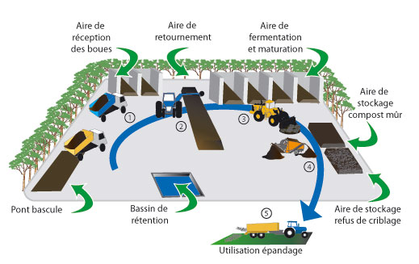
Le produit final doit répondre à la norme NFU compost. Il doit notamment respecter des teneurs en organismes pathogènes et en métaux lourds plus strictes que les seuils réglementaires des boues autorisées à l'épandage. Tout compost dont la qualité est conforme à la norme NFU compost n'est plus un déchet mais un produit et, à ce titre, peut être distribué sans autre formalité que le marquage de sa composition et de conseils d'utilisation, au même titre que n'importe quel engrais organique ou support de culture.
1.4 Les procédés thermiques de valorisation des boues
Comme vu précédemment, la réglementation amène à une augmentation du volume de boue à gérer tandis que dans le même temps les voies de valorisation agricole se réduisent et/ou deviennent plus onéreuses. L'alternative à la filière agricole repose sur des procédés thermiques permettant de réduire le volume des boues, de les brûler, de les gazéifier, de les oxyder ou bien de les transformer en énergie valorisable.
1.4.1 Le séchage
Le séchage correspond à un double transfert thermique et massique. L'énergie apportée au produit va évaporer l'eau contenue dans la boue déjà pré-déshydratée. Le transfert thermique peut se faire par :
- Conduction, l'énergie nécessaire à l'évaporation de l'eau est apportée via la mise en contact du produit sur paroi chauffée (à la vapeur, à l'eau chaude ou bien à l'huile thermique),
- Convection, l'énergie est apportée par l'air de séchage chauffé directement par une flamme ou indirectement au travers d'un échangeur dont le fluide caloporteur est au choix de la vapeur, de l'eau chaude ou bien de l'huile thermique,
- Rayonnement, l'énergie de séchage est apportée par une onde électromagnétique.
Les technologies employées sur les boues sont :
- Soit des sécheurs convectifs comme des sécheurs à bandes. Les boues étant étalées sur des bandes. L'air chaud de séchage venant traverser les bandes et entrer en contact avec le produit.
- Soit des sécheurs conductifs comme des sécheurs couches minces. Les sécheurs couches minces sont des sécheurs ayant une paroi chaude sur laquelle on va venir étaler les boues en couche mince pour permettre un bon transfert conductif.
- Soit un mixte conductif-convectif.
Sécher la boue présente quatre intérêts :
- L'élimination partielle ou totale de l'eau libre, de l'eau interstitielle et d'une fraction de l'eau liée pour réduire le volume final,
- L'augmentation du pouvoir calorifique des boues. Le pouvoir calorifique des boues est fonction de sa matière volatile mais surtout du pourcentage de matière sèche qu'elles contiennent,
- La stabilisation voire l'hygiénisation des boues lorsque la siccité est supérieure à 90 % de matière sèche. Alors que, selon les règles de EPA (USA), pour hygiéniser les boues la réglementation impose des obligations de moyens (notamment thermiques), et de résultats, la réglementation française ne parle que d'obligation de résultat. Une boue à 90 % de siccité aura subi un traitement thermique sur un temps suffisamment long pour l'hygiéniser,
- L'amélioration de la texture des boues avec modification de la granulométrie et capacité de la boue séchée à se déliter facilement sur la surface agricole.
Le taux de siccité, soit taux de matière sèche noté MS, obtenu peut varier de 30 à 90 % en fonction des objectifs et des contraintes liés à la nature de la boue et de sa destination. En cas de valorisation agricole, on procédera à un séchage poussé (de 60 à 90 % de matière sèche) ou total (+ de 90 % de matière sèche). À 90 %, les boues sont hygiénisées ce qui permet d'assurer leur stockage hors période d'épandage. En amont d'une incinération, on procédera à un séchage partiel (autour de 35 % de MS) pour assurer l'autothermicité du four.
Le séchage des boues présente de nombreuses difficultés d'exploitation liées : à la nature collante des boues à certaines siccités, ce qui impacte le séchage et le transport des boues ; à la nature explosive des boues qui peuvent prendre feu ; à la nature abrasive des boues qui nécessite une maintenance lourde.
Malgré le coût énergétique élevé, le séchage continue d'être proposé car, une fois séchées à 90 % de matières sèches, les boues sont stabilisées, hygiénisées. Ainsi, tout en réduisant drastiquement le volume final des boues, le séchage permet de limiter toute incertitude liée à une éventuelle évolution réglementaire.
1.4.2 L'incinération
L'oxydation thermique est la filière qui répond le mieux aux critères de réduction de volume et d'hygiénisation. La boue est complètement minéralisée et les germes pathogènes détruits cependant elle est peu développée du fait de la réticence des riverains qui ne souhaitent pas d'incinérateur près de chez eux. L'article de Luneau souligne l'aspect sociologique des incinérateurs et cite Douglas décrivant cette « hypersensibilité » face aux déchets par la répulsion que provoque tout élément susceptible de « souiller » un environnement, une personne ou un groupe [Luneau, 2012 ; Douglas, 2001].
Luneau y décrit de multiples cas qui peuvent illustrer un syndrome nommé NIMBY (pour Not In My Back Yard). Ainsi, tous reconnaissent l'utilité publique d'un incinérateur mais aucun ne le souhaite près de chez lui en subodorant de possibles nuisances.
L'oxydation thermique s'effectue dans des fours à lit de sable fluidisé tel que représenté à la figure 1.7. Ces fours sont plus simples d'exploitation que les incinérateurs conventionnels utilisant des tunnels rotatifs. Une combustion efficace en phase gazeuse nécessite un temps de séjour contrôlé, une température optimale et uniforme, ainsi qu'une turbulence élevée. La technologie du lit fluidisé remplit au mieux ces conditions, constituant une technique fiable et une grande facilité d'exploitation. En fonction du taux de matière sèche et de matière organique, le procédé devient exothermique.
Comme schématisé sur la figure 1.7, un four à lit fluidisé est constitué d'un réacteur en acier revêtu de réfractaires comportant quatre parties :
- Une zone d'admission d'air de fluidisation dite boite à vent située au pied du four recevant l'air de fluidisation et permettant d'homogénéiser le flux d'air à travers les tuyères d'injection dans le lit de sable,
- Un système de répartition de l'air de fluidisation au moyen d'un jeu de tuyères répartissant l'air de fluidisation,
- Un lit de sable maintenu à environ 750 °C dans lequel est injecté la boue avec ou sans combustible d'appoint,
- Une chambre de combustion supérieure.
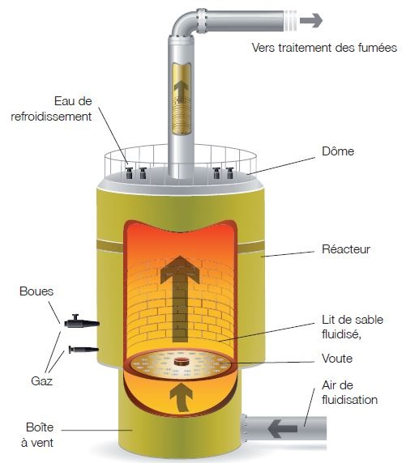
L'air de fluidisation, servant également d'air de combustion, est admis dans la boite à vent à 600 °C. Cette boite à vent sert de zone tampon et assure une répartition homogène de l'air injecté sous le lit de sable. Les fortes turbulences générées dans le lit de sable provoquent un fractionnement rapide des particules de boue qui se consument alors immédiatement. Le volume de la chambre de combustion permet, grâce à un temps de séjour de plusieurs secondes, de compléter l'incinération et de séparer le sable des cendres.
Les cendres sont entraînées par les gaz de combustion et subissent une série de traitements repris sur la figure 1.8. En sortie, au niveau de la zone 2, ces gaz subissent un premier refroidissement au travers un échangeur récupérateur de chaleur et passent de 850 à 550–600 °C. Cette énergie récupérée sert à réchauffer l'air de fluidisation arrivant dans la boite à vent à 550–600 °C.
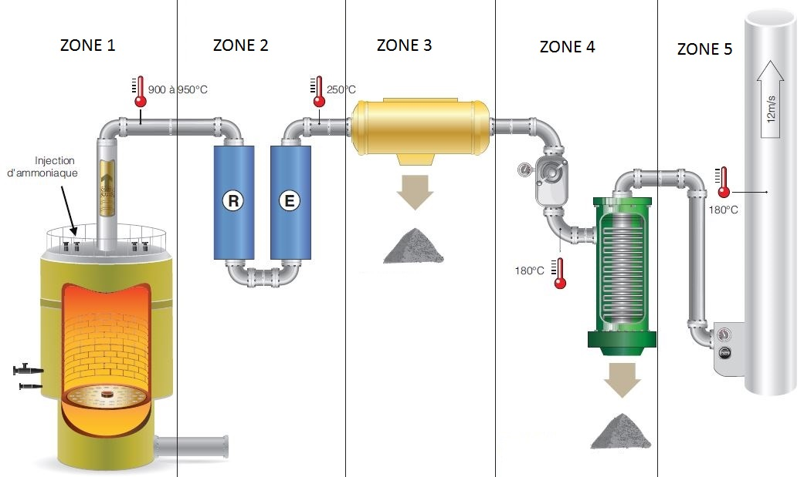
Les fumées subissent éventuellement un second refroidissement via un échangeur, soit pour récupérer davantage de calories, soit pour refroidir les fumées à un niveau acceptable pour le traitement des fumées.
Cette température ne descend pas sous 250 °C car, en considérant les pertes thermiques des installations suivantes, il faut conserver une température suffisamment élevée au niveau de la cheminée située en zone 5 pour maintenir un bon tirage thermique de la cheminée d'extraction et avoir un panache de fumées le moins visible possible.
À la suite du récupérateur et de l'échangeur se trouve le traitement des fumées situé au niveau des zones 3 et 4. En premier étage de traitement, zone 3, se trouve un électrofiltre qui collecte les poussières grâce à un champ électrique. Quand le taux de poussière est important, un cyclone est placé en amont afin de soulager l'électrofiltre. Les poussières collectées forment les cendres, elles sont stockées puis valorisées en techniques routières ou incorporées dans des bétons ou encore déposées en centre de stockage.
Par la suite, en zone 4, se trouve une injection de bicarbonate de sodium et une injection de charbon actif. Le bicarbonate de sodium permet de neutraliser divers polluants tels que les acides chlorhydrique, fluorhydrique et le dioxyde de soufre. Le charbon actif permet de neutraliser des micro-polluants comme les dioxines, les furanes et le mercure.
Les réactifs qui ont précédemment piégé les polluants sont filtrés grâce à des filtres à manches régulièrement nettoyés. Les filtres produisent les REFIBs (pour Résidus d'Épuration des Fumées d'Incinération des Boues). Ces REFIBs sont évacués en centre de stockage. Il est donc important d'en minimiser la quantité ce qui explique l'importance d'un cyclone et d'un électrofiltre en amont pour augmenter la proportion de cendres et diminuer la proportion de REFIB.
L'incinération est une bonne solution pour le traitement des boues cependant elle nécessite un fort investissement, une maintenance lourde, un suivi de l'exploitation rigoureux, des contraintes réglementaires importantes pour la gestion des cendres et des résidus d'épuration des fumées d'incinération des boues.
1.4.3 La pyrolyse
La pyrolyse est une oxydation thermique de la matière organique des boues en défaut d'air. Les points différenciant par rapport à un four en excès d'air sont :
- Un débit de fumées moindre,
- Une décomposition de la matière organique permettant de récupérer du syngaz constitué de H₂, CO, CO₄, CO₂, N₂, coke (char),
- Un taux de NOX réduit,
- La possibilité de fixer certains polluants en phase solide et non en phase gazeuse.
Cette technique n'est pas sans inconvénients car :
- Les boues doivent contenir le moins d'eau possible. D'où la présence en amont d'un sécheur ce qui représente un double équipement,
- C'est un procédé endothermique qui nécessite un ajout constant d'énergie.
La pyrolyse est très peu développée [Ademe]. Tout comme les fours à lit fluidisé, la pyrolyse représente un fort investissement et une maintenance importante. Le traitement des fumées est moindre car il ne s'agit que d'une postcombustion mais le procédé n'est pas autothermique et réclame des boues à forte siccité ce qui implique la mise en œuvre d'un sécheur en amont.
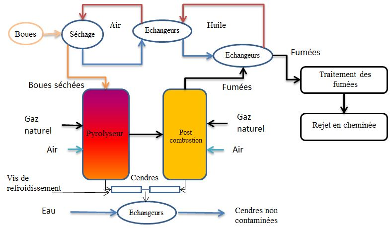
En France, la seule installation industrielle de pyrolyse des boues est celle située sur l'usine du SIAPP de Valenton dont la figure 1.9 illustre le principe. Cette installation a été fournie par la société NESA. La figure 1.9 schématise le fonctionnement de cette installation étudiée lors d'une visite sur site.
Les boues alimentant la pyrolyse sont préalablement séchées à 90 % de siccité. Une partie de l'énergie nécessaire au séchage provient de l'énergie récupérée sur les fumées de la post-combustion grâce à une série d'échangeurs. Les boues séchées entrent dans un premier étage de réacteur où, en présence d'une atmosphère contrôlée en léger excès d'air, à une température de 850–900 °C et pendant un temps précis, les boues vont être pyrolysées.
Elles sont ensuite envoyées dans un second réacteur dit de post-combustion où les résidus de goudron sont détruits à haute température. Toujours dans cette zone, le produit carbonisé va se réduire et produire du syngaz. Les fumées sont traitées au moyen d'un électrofiltre. Les cendres sont extraites puis refroidies avant d'être évacuées. Que ce soit au niveau du premier ou du second étage, le procédé n'est pas autothermique et il nécessite d'injecter du gaz naturel et de l'air pour contrôler les niveaux de température.
1.4.4 L'oxydation par voie humide
L'oxydation par voie humide (OVH), connue également sous le nom d'oxydation hydrothermale (OHT) ou d'oxydation sous-critique, est un procédé connu depuis relativement longtemps et déjà mis en œuvre dans plusieurs unités de traitement des déchets industriels ou de boues urbaines à l'étranger et notamment aux USA.
F. J. Zimmermann donna une définition de l'OVH dans son brevet (US 2399607) de 1943 concernant la technologie ZIMPRO. Zimmermann expliqua que l'OVH « est une méthode de "combustion" en présence d'oxygène de l'air, à haute température (300 °C) et à haute pression (100 bar), des matières organiques dissoutes ou en suspension dans l'eau liquide. Les déchets sont brûlés, en présence d'eau liquide, tout comme la méthode usuelle qui consiste à évaporer l'eau avant l'incinération du résidu sec. »
En 2007, VEOLIA a construit le premier réacteur OVH sur les boues en oxygène pur sur la station Aquiris située à Bruxelles Nord. Depuis 2010, les deux réacteurs de 23 m³ de la figure 1.10 traitent 27 000 tonnes de matières sèches par an.
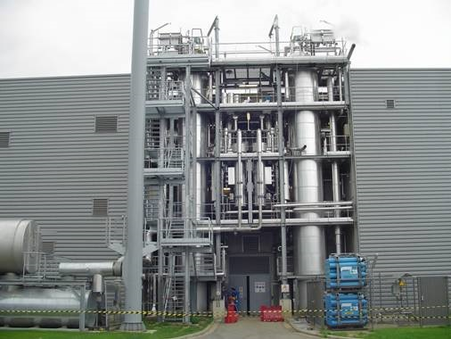
L'oxydation thermique est caractérisée par un temps de séjour de l'ordre de l'heure dans des conditions de température et pression élevées. Les procédés OVH fonctionnent à l'air, à 300 °C sous une pression de 100 bar. Le procédé OTV ATHOS, de par l'utilisation d'oxygène, fonctionne à 250 °C à une pression de l'ordre de 54 bar.
Le schéma de la figure 1.11 présente le fonctionnement de l'OVH mis en œuvre à Bruxelles ainsi que sur les autres références d'OTV.
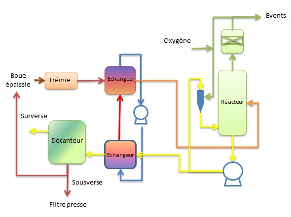
La boue à minéraliser par voie humide est préalablement épaissie à une concentration suffisante pour assurer l'autosuffisance énergétique du système. Cette concentration nécessaire de la boue dépend essentiellement de sa qualité, et est généralement comprise entre 60 et 80 gMS/l.
La boue épaissie est stockée dans un bac d'alimentation puis pompée à un débit contrôlé à l'aide d'une pompe haute pression vers le réacteur d'oxydation, via un échangeur de chaleur, dit réchauffeur primaire, permettant son préchauffage à une température de 150 à 165 °C. Le préchauffage est mené à l'aide d'un circuit fermé d'eau surchauffée. Les calories apportées au préchauffage des boues sont récupérées sur le refroidisseur de boues minéralisées, dit refroidisseur primaire. Un apport énergétique extérieur sera nécessaire dans les phases de démarrage et lorsque la concentration de la boue à l'entrée tend à diminuer.
Le réacteur OVH est considéré comme parfaitement agité grâce à une recirculation externe au moyen d'un pompage. L'oxygène est injecté sous forme gazeuse à un débit contrôlé dans un oxy-éjecteur alimenté par des boues minéralisées. Le réacteur est ainsi maintenu en phase liquide et est parfaitement agité.
Les boues refroidies passent au travers d'une vanne de détente liquide, puis d'un échangeur secondaire voire tertiaire pour être refroidies à 45 °C, puis sont décantées puis refroidies une seconde fois à une température proche de 45 °C. La sur-verse du décanteur et les filtrats de déshydratation sont renvoyés en tête de station ou traités in-situ. La sous-verse du décanteur est éventuellement partiellement retournée en tête du procédé, permettant ainsi une augmentation du temps de séjour des solides par rapport au liquide. La sous-verse extraite est déshydratée sur un filtre-presse à 60–50 % de siccité.
Le volume de gaz généré condensé à l'eau, est exempt de poussières et autres composés de type dioxines, HCl, NOX. Avant leur rejet à l'atmosphère, ces gaz peuvent subir un traitement thermique dans le but d'éliminer le monoxyde de carbone et les COV via une oxydation thermique.
1.4.5 La digestion anaérobie
Tout comme la boue activée, le digesteur est un procédé connu et maîtrisé abondamment décrit dans la littérature [Metcalf, 2003]. « Le principe de digestion d'une boue est attribué à Louis H. Mouras de Vesoul » qui testa le phénomène dès 1860 et qui « déclara que la boue avait été liquéfiée » [Gray, 2004]. Par la suite, un large réacteur sceptique, soit un digesteur, fut construit dans la ville d'Exeter, en Angleterre en 1895 [Gray, 2004].
La digestion met en œuvre une série de 4 étapes plus ou moins rapides durant lesquelles un ensemble complexe de réactions réalisées par différents groupes de micro-organismes anaérobies a lieu. Le fonctionnement d'un digesteur est intrinsèquement lié à la bonne santé de ces micro-organismes dont il faut maintenir l'environnement dans un équilibre et dans des conditions constantes. L'article de Lise Appels décrit ces conditions d'équilibre à chacune des étapes de la figure 1.12 [Appels, 2008].
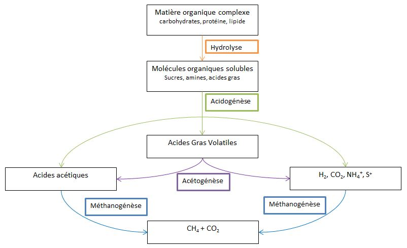
Les principaux paramètres à respecter sont le pH, l'alcalinité, la température et le temps de séjour du digesteur. À ceci s'ajoute la nécessité de maintenir des conditions opératoires stables telles :
- Qu'une alimentation continue et sans variation de débit ou de charge,
- Qu'un brassage continu assurant une homogénéité optimale du milieu.
La figure 1.12 schématise les 4 étapes de réactions biologiques que les matières organiques digestibles, dissoutes ou particulaires subissent lors de la digestion. Ces quatre étapes sont :
- Une hydrolyse macromoléculaire de la matière organique en composés simples par des enzymes spécifiques. Cette étape est lente et limitée à une partie des particules, d'où l'importance des procédés d'hydrolyse thermique permettant d'augmenter la fraction particulaire qui est dissoute. L'étape d'hydrolyse biologique est l'étape limitante car elle est de 30 à 40 fois plus lente que les étapes suivantes.
- Une étape dite d'acidogénèse rapide où la flore acidogénèse va produire des composés acides à partir de ces molécules basiques. Cette phase acide ne doit en aucun cas être dominante (augmentation des Acides Gras Volatils et diminution du pH, accumulation de H₂) car elle inhiberait la méthanogenèse. Le suivi des acides gras volatils (AGV) est donc un indicateur de la bonne santé du digesteur.
- Une étape de fermentation et d'acétogénèse.
- Une étape dite de méthanogénèse où la flore méthanogène va produire du biogaz principalement sous forme de CO₂ et de CH₄.
Au final, la production de biogaz est déterminée suivant la composition de la boue en carbone, hydrogène, oxygène, azote et soufre (le CHONS). La formule de Buswell corrigée par Boyle permet de déterminer la quantité de méthane produite lors de la digestion d'une boue en fonction de son CHONS à la stœchiométrie [Buswell, 1952 ; Boyle, 1976] :
CnHaObNcSd + (n − a/4 − b/2 + 3c/4 + d/2) H₂O →
(n/2 − a/8 + b/4 + 3c/8 + d/4) CO₂ + (n/2 + a/8 − b/4 − 3c/8 − d/4) CH₄ + c NH₃ + d H₂S
Toujours sur base du CHONS, la formule suivante permet de déterminer la demande chimique en oxygène, à savoir la quantité d'oxygène nécessaire pour dégrader une boue en fonction de sa composition :
CaHbOcNdSe + (a + b/4 − c/2 − 3d/4 + 3e/2) O₂ →
a CO₂ + (b/2 − 3d/2) H₂O + d NH₃ + e SO₃
Par exemple, si l'on considère la composition d'une protéine C5H7O2N1S0,03, qui correspond à une boue biologique, nous obtenons :
C5H7O2N1S0,03 + 5,05 O₂ → 5 CO₂ + 2 H₂O + 1 NH₃ + 0,03 SO₃
Une fois convertie en masse, on obtient le ratio DCO/MV :
DCO/MV = Masse d'O₂ / Masse de C5H7O2N1S0,03 = 161,44 / 113,96 = 1,42
Pour cette même composition, la formule de Buswell donne :
C5H7O2N1S0,03 + 3,02 H₂O → 2,51 CO₂ + 2,49 CH₄ + 1 NH₃ + 0,03 H₂S
Sur base de ces équations et du ratio DCO/MV, on obtient le ratio :
Nm³ de CH₄ / kg de DCO = (Masse de CH₄ × 22,4) / (Masse de C5H7O2N1S0,03 / [DCO/MV]) = 0,3458
Dans la littérature, pour la boue, un ratio de 0,35 Nm³/kg DCO est souvent cité lors des comparaisons de solutions incluant un digesteur. En considération maintenant une boue avec un ratio DCO sur la matière organique de la fraction dégradée pendant la digestion de 1,6 et un biogaz ayant une teneur en méthane de 63 %, on aboutit à un ratio de 0,35 × 1,6 / 0,63 = 0,9 Nm³/kg MV abattue. Ce ratio est lui aussi fréquemment utilisé.
Les digesteurs représentent le moyen le plus simple de réduire la quantité de boue. De plus, ils permettent de produire du biogaz qui est aujourd'hui soit valorisé en électricité via une cogénération, soit injecté dans le réseau. Ces deux voies de valorisation du biogaz nécessitent au préalable un traitement consistant à enlever la vapeur d'eau mais aussi le gaz H₂S et les siloxanes. Pour l'injection dans le réseau, le biogaz est purifié au travers de membranes pour atteindre une concentration en CH₄ de 98 %.
De nombreux procédés de prétraitement des boues par action mécanique, ultrasons ou cavitation ont tenté d'optimiser les digesteurs en proposant une alternative à l'hydrolyse thermique. De tous ces procédés, seule l'hydrolyse thermique a démontré son efficacité à désintégrer des cellules à digérer et à dégrader les substances polymériques extracellulaires de manière à optimiser l'étape limitante de l'hydrolyse bactérienne.
1.5 Le cas particulier des procédés d'hydrolyse thermique
L'hydrolyse thermique permet par l'effet combiné d'une température de traitement et d'un temps de réaction de déstructurer la boue en cassant les parois cellulaires des bactéries. Ce faisant le liquide cellulaire fortement biodégradable va se libérer permettant ainsi aux bactéries du digesteur d'accéder à davantage de matière digérable. De plus, comme évoqué à la section 1.4.5, la phase d'hydrolyse du digesteur qui est limitante car longue ne l'est plus car l'hydrolyse a déjà eu lieu.
Trois effets majeurs sont alors rencontrés lors d'une hydrolyse thermique permettant d'optimiser la filière de traitement des boues :
- La transformation des boues, difficilement biodégradables, en boues plus facilement assimilables par la biologie.
- L'abattement des matières en suspension, c'est-à-dire la solubilisation des matières particulaires, due à la lyse cellulaire réalisée par l'hydrolyse thermique. La matière va être pour ainsi dire crackée.
- La diminution de la viscosité des boues permettant un brassage plus aisé du digesteur.
Le couplage d'une hydrolyse thermique de boues déshydratées et d'une digestion présente les avantages suivants :
- La réduction de la taille du digesteur par augmentation de la charge entrante,
- L'augmentation de la production du biogaz par augmentation de la biodégradabilité des boues entrantes,
- La stérilisation et donc l'hygiénisation des boues hydrolysées,
- Une meilleure déshydratabilité des boues,
- L'amélioration des performances de digestion.
L'hydrolyse thermique est un procédé qui complète la digestion anaérobie. Bien que l'on trouve toujours ce procédé en amont d'un digesteur, il est aussi possible de l'implémenter entre deux digesteurs dans une configuration dite DLD pour Digestion Lyse Digestion.
Les traitements thermiques de ce type étaient initialement utilisés pour améliorer la déshydratation des boues. Par la suite, il est apparu que ce traitement à haute température entraînait l'amélioration de la biodégradabilité de la boue mais aussi une modification de la rhéologie des boues autorisant une augmentation de la concentration des boues en entrée du digesteur.
Amélioration de la déshydratabilité
L'hydrolyse thermique était initialement vue comme un moyen d'améliorer la déshydratabilité des boues [Lumb, 1940 ; Lumb, 1951 ; Everett, 1972 ; Sherwood, 1970]. Lumb, Sherwood et Everett ont noté que la déshydratabilité des boues était bien meilleure même sans être digérée. Everett situa la plage de température de réaction de 180 à 210 °C [Everett, 1972].
Plus tard, Haug appliqua ce principe aux boues faiblement biodégradables [Haug, 1977 ; Haug, 1978]. Ainsi, il vit un effet sur la déshydratabilité des boues qu'elles soient digérées ou non.
Plus récemment, Higgins et al. ont établi une corrélation quasi linéaire entre la température de réaction et l'effet sur la déshydratation. À 130 °C, la siccité des boues déshydratées était de 27 % alors qu'il est possible d'obtenir une siccité de 32 % avec les mêmes boues hydrolysées à 170 °C [Higgins, 2014].
Les conditions opératoires
Les conditions opératoires d'une hydrolyse thermique sont de deux ordres, à savoir :
- La température de réaction de l'hydrolyse,
- Le temps de réaction de l'hydrolyse.
De nombreux travaux ont étudié les couples temps et température et leur impact sur la solubilisation de la DCO ou autrement dit leur impact sur la production de biogaz.
Everett nota que la solubilisation de la DCO augmentait de 150 à 170 °C mais qu'au-delà de 170 °C, il n'y avait plus d'impact sur la solubilisation entre 60 et 90 minutes [Everett, 1972].
Haug détermina que les conditions optimales pour une réaction d'hydrolyse thermique devaient se situer entre 160 à 180 °C, pour un temps de rétention de 20 à 40 minutes [Haug, 1978].
Bougrier démontra que la solubilisation de la DCO augmente entre 150 et 180 °C pour un temps de rétention de 0 à 90 minutes et que, quelle que soit la nature de la boue, pour des températures de traitement inférieures à 200 °C, la solubilisation de la DCO est linéaire [Bougrier, 2007]. Il n'est donc pas utile d'aller au-delà de 200 °C et il existe une température optimale entre l'effet thermique et la production de biogaz [Bougrier, 2007].
Même si, comme le mentionna Noike, un temps de rétention long est nécessaire, il ne faut pas que ce temps soit trop long et que la réaction se fasse à une température adéquate [Noike, 1992].
Atténuation du phénomène de moussage
Il arrive qu'une présence excessive de bactéries dites filamenteuses issues de la file de traitement des eaux se retrouvent dans les boues extraites du bassin de boue activée. Ces bactéries en grand nombre peuvent provoquer un moussage des boues dans les digesteurs. Cette mousse vient par la suite obstruer le circuit de biogaz ainsi que les évents de sécurité.
Barjenbruch a montré qu'un traitement thermique en amont du digesteur était efficace pour diminuer ce phénomène de moussage en détruisant les matières organiques hydrophobes [Barjenbruch, 2003].
De même, Alfaro et al. ont confirmé l'intérêt positif sur le moussage en réalisant à échelle pilote une hydrolyse thermique à 170 °C sur des boues dont le digesteur présentait des problèmes de moussage. Les tests ont montré une réduction significative des organismes filamenteux de type M. parvicella [Alfaro, 2014].
La production DCO dure
Comme précédemment explicité à la section 1.2, l'indicateur quant à la pollution de l'eau se détermine en fonction de la quantité d'oxygène nécessaire pour oxyder cette pollution. C'est la demande chimique en oxygène.
Il arrive que certains éléments soient résistants à cette oxydation et demandent donc plus d'oxygène ou bien qu'ils ne puissent pas être oxydés. Dans ce cas, ces éléments de pollution sont rejetés dans l'environnement. Cette pollution résistante à l'oxydation de l'oxygène est dite dure. Pour les composés durs, on parle alors de demande chimique en oxygène dure.
Ces éléments durs produits lors de l'hydrolyse thermique sont séparés des boues après digestion lors de l'étape de déshydratation au travers une centrifugeuse et se retrouvent dans les centrats (soit l'eau extraite lors du processus de séparation de la matière en suspension et de l'eau). Ces centrats sont renvoyés en tête d'usine et présentent une pollution additionnelle pour l'usine. Il est donc important de produire le moins de DCO dure lors de la phase d'hydrolyse. Ceci impacte le choix du couple temps / température de traitement.
Stuckey a mis en évidence une augmentation de la production de matériaux composés durs avec l'augmentation de la température de réaction de l'hydrolyse thermique ainsi qu'une augmentation linéaire de la production de biogaz jusqu'à atteindre +27 % de biogaz à 175 °C. Entre 175 °C et 250 °C cette production de biogaz stagne avant de décroître au-delà de 250 °C [Stuckey, 1984].
Limitation des transferts thermiques
L'un des points clefs de ces technologies est la minimisation de la demande en énergie pour atteindre la température de traitement désirée. Xu indique que lorsque la matière sèche de la boue augmente en entrée d'un réacteur d'hydrolyse thermique, la demande vapeur diminue [Xu, 2009].
En fait, il est évident que lorsque la siccité augmente, la quantité d'eau à chauffer est moindre ce qui impacte directement sur la demande vapeur. Le calcul de cette demande vapeur se fait par le simple bilan masse :
Mvapeur = 1000 × [ρboue fraîche × Vboue fraîche × Cpboue fraîche × ΔT(Tfinale − Tinitiale)] / [Hvapeur − Cpboue finale × Tboue finale − Hvapeur × Coeffpertes thermiques]
La masse volumique de la boue dépend de sa concentration en matière sèche, de sa concentration en matière volatile et de sa température [Metcalf, 2003] :
ρboue = [1 / (FS/TS / 2,5 + VS/TS / 1)] × ρeau
avec FS pour "fixed solids", VS pour "volatile solids" et TS pour "total solids"
Ainsi, plus la siccité de la boue est élevée, moins le volume d'eau qu'il est nécessaire de réchauffer à la température de traitement désirée est important.
Classiquement, les procédés existants acceptent des boues dont la teneur en matière sèche varie de 15 à 18 %. Cette limitation à 18 % de matière sèche est due aux propriétés rhéologiques de la boue qui influencent le transfert thermique [Ratkovich, 2013 ; Markis, 2016].
Par la suite, cette boue est diluée par la vapeur condensée ainsi que par de l'eau additionnelle afin de rentrer dans le digesteur à 10–12 %. Ces valeurs de 10–12 % ont une double contrainte. La première est liée à la rhéologie des boues car au-delà de 12 % de matière sèche, le brassage du digesteur n'est plus correctement assuré. La seconde est liée à l'augmentation de la concentration d'ammoniac qui a un effet inhibiteur sur la réaction méthanogène.
Optimisation du digesteur
Dans une note informative de Eshtiaghi, la boue est décrite comme un fluide thixotropique non-newtonien. On peut s'attendre à ce que la rhéologie de la boue entrant dans un réacteur à haute siccité, entre 20 et 28 % de matière sèche, puisse voir sa nature évoluer lorsqu'elle est chauffée à 165 °C pendant 20–30 minutes [Eshtiaghi, 2013].
Il est communément admis qu'un digesteur fonctionne avec des boues ayant une concentration en matière en suspension de l'ordre de 50 g/l soit environ 5 % de matière sèche en entrée de digesteur, pour un temps de séjour hydraulique de 20 jours. Ainsi, en entrant avec des boues à 10 % au lieu de 5 % de masse sèche, le volume du digesteur est divisé par deux pour une même quantité de matière à traiter.
Le temps de séjour hydraulique peut lui aussi être optimisé car l'effet thermique ayant dégradé la matière avant son injection dans le digesteur, les cinétiques mises en jeu dans le processus de digestion en sont plus rapides. Walley a fait fonctionner avec succès des digesteurs situés en aval d'une hydrolyse thermique à 12 jours [Walley, 2007]. Wilson conclut que les performances d'un ensemble hydrolyse – digesteur affichaient les mêmes performances en 15 jours qu'un digesteur seul ayant un temps de séjour hydraulique de 20 jours [Wilson, 2008].
1.5.1 Les procédés d'hydrolyse thermique existants
1.5.1.1 Le Porteous et le Farrer
Les procédés Porteous et Farrer sont des procédés de conditionnement thermique des boues digérées visant à améliorer uniquement les performances de la déshydratation. Ce sont les premiers procédés thermiques qui ont été testés dès 1940 par Lumb [Lumb, 1940]. Dans ces procédés les boues épaissies à 40 gMS/L sont portées à une température allant de 180 à 200 °C sous une pression de 20 bar pendant une heure. Ce conditionnement thermique permet d'obtenir de hautes siccités de l'ordre de 50 %.
La seule référence d'un Porteous se trouve sur le site du SIAPP à Achères. D'après une fiche synthèse de cette station [SIAPP], le procédé fonctionne à 195 °C durant un cycle de 45 minutes. Les boues sont ensuite décantées puis sont envoyées en tête d'un filtre-presse fonctionnant entre 8 et 10 bar. Un traitement des odeurs est nécessaire pour ce procédé.
1.5.1.2 Le procédé CAMBI
Le procédé CAMBI, du nom de la société qui le commercialise, vise à améliorer les performances de la digestion anaérobie en faisant subir aux boues un prétraitement thermique afin d'augmenter leur biodégradabilité.

La figure 1.13 représente le principe de ce procédé à savoir :
- Une hydrolyse thermique par injection de vapeur sur des boues déshydratées à environ 12–18 %,
- Suivie d'une digestion anaérobie mésophile, dite turbo-digestion, qui travaille à un temps de séjour de 15–20 jours.
Les boues primaires et biologiques, une fois mélangées, sont déshydratées par une centrifugeuse située en amont du procédé. Cette étape de déshydratation permet de concentrer les boues de 3–6 % à 12–18 % de siccité. Les boues sont ensuite stockées dans une trémie d'alimentation avant d'être reprises et envoyées vers le pulpeur.
Le pulpeur reçoit de la vapeur basse pression du réacteur de flash dit flash tank situé en sortie des réacteurs afin de préchauffer les boues fraîches. Il est parfaitement agité grâce à une pompe de recirculation qui assure l'homogénéité du mélange. Les boues préchauffées sont ensuite envoyées dans les réacteurs où elles seront montées à 165 °C sous 7 bar par l'injection de vapeur vive. Le nombre de réacteurs est déterminé de manière à avoir une demande vapeur constante lors du cycle total de traitement qui varie de 60 à 72 minutes.
Une fois le cycle de traitement terminé, les boues sous pression sont dépressurisées dans un flash tank permettant ainsi de créer de la vapeur basse pression servant au réchauffage des boues et de les refroidir. Un échangeur final vient contrôler la température des boues avant leur injection dans le digesteur.
1.5.1.3 Le procédé BioThelys de VEOLIA
La figure 1.14 présente une filière type de traitement des boues par le procédé BioThelys.
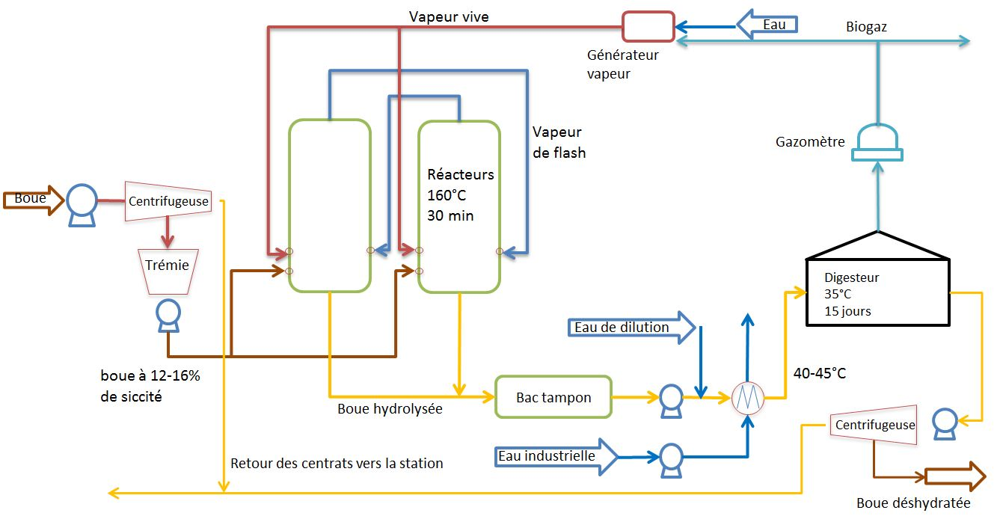
Les boues sont déshydratées par une centrifugeuse à une siccité comprise entre 14 et 16 % puis elles sont stockées dans une trémie avant d'être envoyées dans le réacteur d'hydrolyse pour y être traitées. L'hydrolyse est réalisée par 2 ou 3 réacteurs fonctionnant en parallèle, de manière décalée et par bâchées. Les boues hydrolysées sont ensuite stockées temporairement dans un bac tampon permettant ainsi le fonctionnement en continu des équipements en aval de l'hydrolyse thermique.
En sortie du bac tampon, les boues sont refroidies à environ 40 °C par un échangeur et alimentent ensuite le digesteur anaérobie mésophile.
Une fois digérées les boues sont déshydratées mécaniquement par une centrifugeuse ou un filtre-presse jusqu'à une siccité de 30–35 % environ avant leur dévolution finale.
L'optimum de 14–16 % est défini afin de limiter au maximum le volume de boue à traiter, et par conséquent la taille des équipements, tout en permettant une bonne diffusion de la vapeur dans la boue et de maintenir une concentration en N-NH₃ dans les boues pouvant inhiber la digestion.
Le cycle d'un réacteur est composé des étapes suivantes :
- Étape 1. Remplissage du réacteur avec de la boue brute (14–16 % de matière sèche)
- Étape 2. Préchauffage des boues avec de la vapeur dite flash provenant d'un autre réacteur de la ligne
- Étape 3. Chauffage des boues avec de la vapeur vive
- Étape 4. Réaction
- Étape 5. Décompression du réacteur vers un autre réacteur de la ligne
- Étape 6. Vidange du réacteur
La description des cycles ci-dessous se base sur l'étude du procédé et le retour d'expérience de réalisations industrielles réelles. La durée de chacune de ces étapes dépend du nombre de réacteurs dans la ligne de traitement. Dans tous les cas les étapes 2 et 5 sont communes pour deux réacteurs.
Étape 1. Remplissage du réacteur avec de la boue brute (14–16 % de matière sèche). Une pompe alimente le réacteur Thelys en boues déshydratées jusqu'à un niveau prédéfini. Lors de l'alimentation l'évent du réacteur est ouvert, le réacteur est donc à pression atmosphérique.
Étape 2. Préchauffage des boues avec de la vapeur flash provenant d'un autre réacteur de la ligne. Les boues sont ensuite préchauffées par de la vapeur flash provenant de la décompression de l'un des autres réacteurs de la ligne de traitement. Cette étape permet un recyclage de la vapeur et favorise donc les économies d'énergie. Le transfert de vapeur flash permet au réacteur donneur d'atteindre environ 1 bar effectif et 110 °C. Les boues sont préchauffées à 80 °C environ et la pression dans le réacteur est entre 0 et 1 bar.
Étape 3. Chauffage des boues avec de la vapeur vive. La montée en pression et en température se fait par ajout de vapeur dite vive. Cette vapeur, provenant du site ou d'une chaudière, est à environ 190 °C / 12 bar et est en général générée par la combustion d'une partie du biogaz produit par la digestion. Elle permet d'atteindre les conditions d'hydrolyse dans le réacteur à savoir 165 °C / 8 bar. Il n'y a pas de pièces mécaniques en mouvement dans le réacteur, c'est la vapeur qui chauffe, met en pression et homogénéise le système. L'injection se fait par l'intermédiaire d'injecteurs de vapeur placés dans la partie inférieure de chaque réacteur. Sous forme de tubes percés de trous, ils sont immergés, et permettent une injection directe de la vapeur dans les boues. Ce sont ces mêmes injecteurs qui ont été utilisés pour l'injection de vapeur flash dans l'étape précédente. En fin d'étape le réacteur est isolé.
Étape 4. Réaction. Une fois la pression et la température requises atteintes (8 bar / 165 °C), les conditions sont maintenues pendant un temps de contact de 30 minutes environ pour permettre l'hydrolyse thermique des boues.
Étape 5. Décompression du réacteur vers un autre réacteur de la ligne. Après la phase de réaction, le réacteur est dépressurisé de 8 bar à environ 1–2 bar afin d'alimenter l'un des autres réacteurs de la ligne en vapeur de revaporisation (cf. Étape 2).
Étape 6. Vidange du réacteur. Le réacteur est finalement vidangé grâce à la pression résiduelle dans le réacteur. Afin d'éviter les à-coups dans le bac tampon dûs à la revaporisation, la vidange se fait de manière progressive et cadencée par l'intermédiaire d'une vanne automatisée (3 s d'ouverture, 15 s de fermeture par exemple). Afin d'améliorer le transfert de vapeur flash dans les boues brutes, un fond de boue hydrolysée est laissé dans le réacteur, environ 10 % du volume total du réacteur. Ces boues ayant une viscosité beaucoup plus faible, elles permettent d'éviter la création de chemins préférentiels de la vapeur dans la boue déshydratée qui entraînerait une mauvaise diffusion de la vapeur dans les boues et par la suite une mauvaise hydrolyse de la boue.
Un cycle complet de remplissage, pressurisation, temps de contact et vidange en aval dure de 150 à 165 minutes suivant le nombre de réacteurs dans la ligne de traitement.
Contrairement au procédé CAMBI, le procédé BioThelys n'a pas de pulpeur et utilise donc l'un de ses réacteurs pour recevoir la vapeur de flash. Ceci a un impact sur la gestion de ses cycles.
1.5.1.4 Le procédé Bippita
Ce procédé se distingue des précédents car il combine un traitement thermique avec un traitement chimique, utilisant plus souvent la soude caustique (NaOH), afin d'augmenter la solubilisation de la matière particulière de la boue entraînant une réduction plus importante des boues.
Le traitement thermochimique des boues épaissies en amont du digesteur a été largement étudié et mis en œuvre afin d'accroître la minéralisation des boues et d'augmenter la production de biogaz. De toutes les méthodes qui ont été testées, à savoir les méthodes thermique, chimique, ultrasonique, thermochimique, il a été constaté que le procédé thermochimique, en tant que pré-traitement mettant en œuvre l'agent NaOH, est le plus efficace dans la réduction des boues et de solubilisation de la DCO.
En effet, Tanaka a montré que l'addition de NaOH (hydroxyde de sodium) dans la boue pendant le traitement thermique augmentait la solubilisation de la matière organique de 70 à 80 % par rapport à une condition sans ajout de NaOH à la même température de traitement [Tanaka, 1997].
Dans un article de Stuckey, à une température élevée de 175 °C, l'ajout de soude caustique a permis d'augmenter la biodégradabilité anaérobie des boues et de passer de 43 % à 68 % de DCO minéralisée dans le digesteur anaérobie [Stuckey, 1978].
Neyens a également montré des améliorations des gâteaux de déshydratation thermochimique avec du CaO passant la siccité finale des boues de 28 à 46 % [Neyens, 2003]. La plupart de ces études de prétraitement thermo-alcalin des boues sont limitées aux basses températures. Peu d'études ont porté sur le traitement thermique des alcalins à plus de 100 °C.
Citons également les travaux de Kim qui a montré que passer d'une hydrolyse thermique alcaline de 100 à 121 °C permettait de solubiliser la DCO des boues jusqu'à 85 %. Ainsi, comparée à une association hydrolyse thermique et digesteur classique, l'augmentation de la production de biogaz pourrait aller jusqu'à 37,8 % [Kim, 2003].
Neyens démontra que la destruction des pathogènes est totalement atteinte à une température de 100 °C à un pH de 10 sur une durée de 60 minutes [Neyens, 2003].
Description
La figure 1.15 représente le schéma du procédé du japonais Bippita. Les conditions opératoires du procédé sont une température de réaction de 200 °C sous une pression de 20 bar. Le temps de réaction varie de 10 à 30 minutes. Le pH se situe autour de 13 à 13,5.
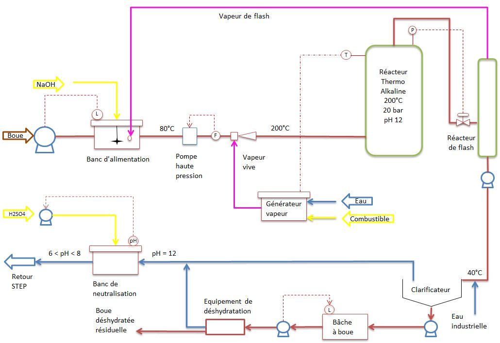
À l'entrée du réservoir d'alimentation, la soude caustique est injectée dans la boue via une pompe doseuse. Les boues et la soude caustique sont pompées à travers un échangeur de chaleur dans lequel la boue est chauffée de 20 à 150 °C en utilisant un échangeur boue / boue à double tube. Côté chaud de l'échangeur se trouve la boue sortant du réacteur. La boue préchauffée est à nouveau chauffée à 200 °C à l'aide d'un deuxième échangeur à tube et calandre utilisant de l'huile thermique chauffée du côté chaud.
L'huile thermique circule en boucle fermée et est chauffée à 225 °C à l'aide d'un générateur thermique. La boue chauffée alimente un réacteur fonctionnant à 200 °C, 20 bar, avec un temps de séjour de 10 à 30 minutes. La boue traitée est refroidie dans le premier échangeur de boue / boue à 90 °C et est détendue à l'aide d'une vanne de régulation. La boue traitée est ensuite refroidie à 45 °C en utilisant de l'eau industrielle sur un échangeur de chaleur à plaques.
Après refroidissement, la boue traitée est neutralisée à un pH 7,5 par ajout d'acide sulfurique. La séparation liquide-solide est réalisée en utilisant un type de membrane de microfiltration.
La partie liquide est retournée au traitement biologique et la boue peut être déshydratée, voire simplement stockée et évacuée par camion en raison des faibles quantités résiduelles. Les reflux de Bippita sont recyclés dans le digesteur après neutralisation.
Aucune étude n'indique la distribution chimique de l'azote en sortie du procédé. Aucune conclusion fiable ne peut être faite sur l'azote qui est l'un des paramètres pouvant inhiber les réactions du digesteur. En ce qui concerne le phosphore, la forme chimique et les quantités sont inconnues.
Bien que séduisante, cette technologie présente deux inconvénients majeurs qui sont l'utilisation d'une base pour augmenter le pH puis d'un acide pour diminuer le pH afin de neutraliser les reflux.
De plus, la faible concentration des boues, de l'ordre de 1 % et 3 % de matière en suspension issue de la liqueur mixte de la boue activée, nécessaire au bon mélange entre la base (soude caustique) et la boue, pénalise la consommation énergétique par rapport aux autres technologies présentées.
1.5.2 L'importance des cycles
Le procédé CAMBI hydrolyse les boues par bâchées. Selon le temps de traitement souhaité, le temps de cycle est soit de 72 minutes pour un temps d'hydrolyse de 30 minutes, soit de 60 minutes pour un temps d'hydrolyse de 20 minutes. Par exemple, un cycle de 60 minutes correspond à 20 minutes de temps de remplissage du réacteur, 20 minutes pour l'hydrolyse et 20 minutes pour vider le réacteur. La présence d'un flash tank et d'un pulpeur permettent de lisser les cycles. De même, des pauses peuvent être mises en place dans le cycle. Le procédé BioThelys fonctionne également par bâchées mais ses cycles sont plus délicats car, du fait de l'absence de pulpeur et de flash tank, les réacteurs fonctionnent en quinconce. Le réacteur receveur de la vapeur flash doit attendre que l'autre réacteur donneur soit prêt à lui transmettre sa vapeur flash. Les cycles sont plus complexes et incluent obligatoirement des pauses. Un cycle complet varie de 150 à 165 minutes suivant le nombre de réacteurs de la ligne de traitement.
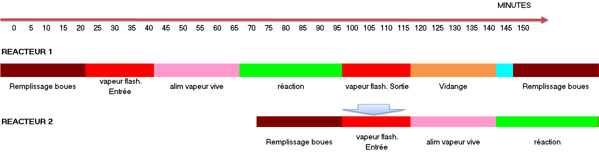
La figure 1.16 présente l'un de ces cycles pour deux réacteurs. Un cycle normal comprend une phase de remplissage du réacteur de 20 minutes. Une fois le remplissage effectué, le réacteur reçoit la vapeur de flash générée par le second réacteur. La durée de cette étape est de 20 minutes, durée nécessaire au second réacteur pour se détendre au minimum. Puis, on injecte de la vapeur vive pendant 30 minutes pour maintenir la température de réaction de 165 °C. En fin de réaction, le réacteur passe de 7 à 1 bar générant de la vapeur de revaporisation (vapeur flash) qui est alors envoyée dans le second réacteur. Une fois à 1 bar, le réacteur est vidangé en 20 minutes.
La principale contrainte avec le BioThelys vient du fait qu'il faille un réacteur prêt à générer de la vapeur flash et un réacteur prêt à recevoir cette vapeur flash au même instant. En fonction du nombre de réacteurs, un temps de pause peut être nécessaire pour récupérer la contrainte sur la vapeur flash.
L'un des avantages d'un procédé continu serait de ne plus avoir à se préoccuper ni de la gestion des cycles, ni des phases de décompression, ni de la gestion de la phase flash.
1.5.3 La taille des réacteurs
La dimension des réacteurs est un point clef de ces installations. Elle est dictée par la siccité des boues en entrée, le temps des cycles et les contraintes d'ingénierie.
Il est possible de recalculer les volumes des réacteurs des deux solutions et de comparer ainsi les gammes proposées.
Ainsi, comme le souligne la figure 1.17, pour un temps de réaction de 20 ou 30 minutes, à siccité égale, les volumes des réacteurs CAMBI sont plus petits. Quatre points peuvent expliquer cela :
- La durée réduite des cycles. Comme vu précédemment, le procédé CAMBI a un cycle variant de 60 à 72 minutes contre 150 à 165 minutes pour le procédé BioThelys.
- La vapeur flash est produite dans le flash tank et non dans le réacteur receveur en début de cycle.
- Le préchauffage des boues se fait dans le pulpeur ce qui évite de réaliser ce préchauffage dans les réacteurs eux-mêmes.
- Le taux de remplissage calculé des réacteurs CAMBI est de 85–90 % contre 60 % effectif dans le BioThelys. Ce taux de remplissage est dicté par la nécessité de conserver une garde hydraulique suffisante pour ne pas entraîner de particules de boues avec la vapeur de revaporisation.
Ce dernier point est issu de l'analyse des données commerciales de CAMBI et du mode de dimensionnement d'un Biothelys. Sur base de l'analyse des gammes CAMBI et Biothelys il est possible de recalculer les volumes utiles et réels des réacteurs des deux technologies.
Comme le montre la figure 1.17, quel que soit le volume traité, la solution BioThelys est toujours désavantagée par les points cités précédemment. Un temps de cycle plus long et un taux de remplissage plus faible accroît davantage cet écart entre les deux technologies.
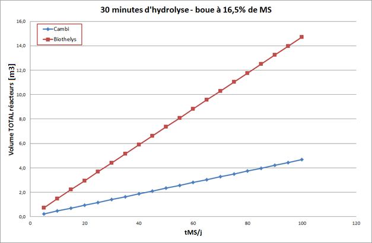
Un procédé continu aurait comme avantage de présenter un volume de réacteurs sensiblement identique aux réacteurs CAMBI tout en ayant l'avantage de :
- Ne plus gérer de cycles. Le réacteur serait en fait un tuyau sous pression dans lequel la boue à traiter serait mélangée et chauffée par une injection de vapeur,
- Ne plus avoir de réservoir de détente (« flash tank ») ni de pulpeur,
- Être plus compacte. Le taux de remplissage serait de 100 %.
1.6 Conclusion
Le devenir des boues issues des stations d'épuration représente un enjeu environnemental majeur. Avec le développement des stations de traitement d'eau, le volume de boues croît alors qu'en parallèle les règlements environnementaux se durcissent et les zones d'épandage se réduisent.
Des solutions de destruction totale des boues reposant sur des procédés d'oxydation thermique existent mais sont complexes et difficiles à implanter socialement. De même, le séchage semble une alternative cependant, du fait de nuisances olfactives importantes, ce procédé est lui aussi socialement difficile à implanter.
Reste la digestion dont les performances de réduction du volume de boue sont réduites. Pour optimiser leurs performances et réduire davantage le volume final de boue, des procédés dits d'hydrolyse thermique consistant à cracker la matière organique de manière à augmenter la fraction digérable peuvent être implémentés en amont du digesteur. Ces procédés fonctionnent par bâchées ce qui rend leur gestion délicate car il doit y avoir adéquation entre la demande d'énergie, à savoir la demande vapeur, et la production de cette vapeur. Ainsi, il n'est pas toujours aisé de gérer les cycles d'hydrolyse des boues de façon à avoir l'adéquation entre les boues à traiter et la vapeur disponible.
Le développement d'une hydrolyse thermique fonctionnant en continu trouve tout son sens dans la mesure où une telle technologie permettrait de pallier aux contraintes des procédés par bâchées existants.
Tout l'enjeu est donc de réussir à concevoir un procédé hydrolysant les boues en continu, fonctionnant dans les conditions élevées de pression et température, traitant un produit dont la rhéologie est complexe, avec des paramètres de débit boue, débit vapeur et de siccité pouvant varier.